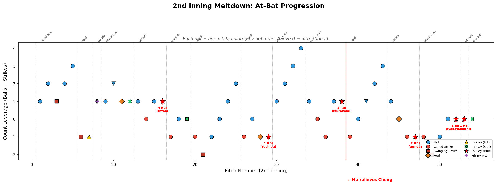
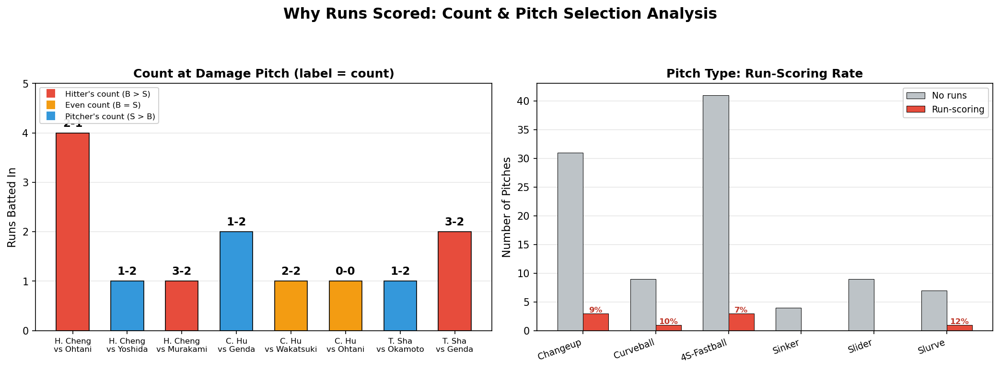
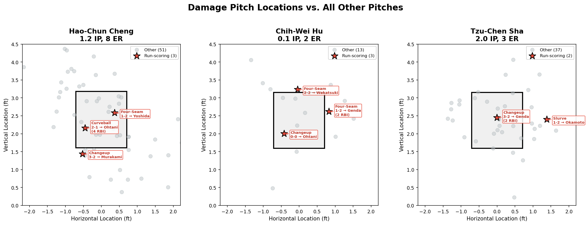
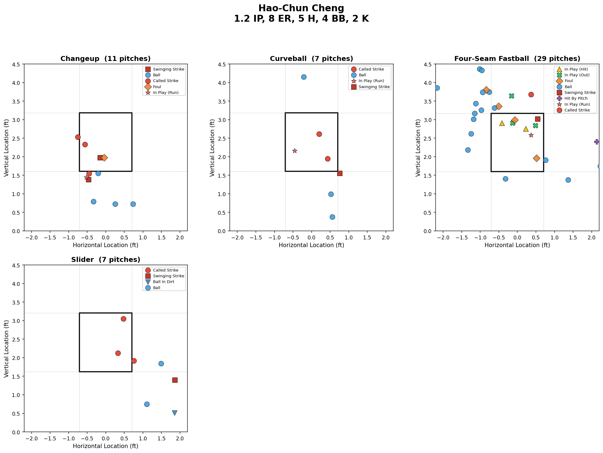

Dissecting the 2nd Inning Meltdown: Taiwan vs. Japan
WBC 2026 Pool C — March 9, 2026.
Japan scored 10 runs in the 2nd inning, a pivotal half-inning that decided the game. Starter Hao-Chun Cheng was pulled after just 1.2 IP with 8 ER, and his performance was widely seen as an area that needed scrutiny. Let's use pitch-level data from that game and machine learning models to objectively examine what happened.
Two Core Questions
Q1: Did Cheng actually pitch poorly?
Was the 2nd-inning meltdown caused by the starter alone? How did the other pitchers perform?
Q2: Could Cheng have done better when facing Ohtani?
With bases loaded and a 2-1 count at the critical moment, Cheng threw an outside curveball that Ohtani crushed for a grand slam. Was there a better pitch selection?
Part 1: Diagnosing the Meltdown
The 2nd Inning, Pitch by Pitch

Each dot is a single pitch in the 2nd inning. The y-axis tracks count leverage (Balls − Strikes): above zero means the hitter is ahead. Red stars mark run-scoring hits. Note how often Cheng let hitters get ahead in the count before the damage pitches.
The Root Cause: Count Control
Why the Runs Scored

Left: The count at each damage pitch — red bars (hitter's count) dominate. Right: Run-scoring rate by pitch type across the entire inning — no single pitch type stands out as especially vulnerable.
Key Insight: Cheng's control problem loaded the bases for Ohtani
Cheng repeatedly fell behind in the count, putting himself in hitter-friendly situations over and over. By the time Ohtani stepped up, the bases were already loaded. Unwilling to simply walk Ohtani, the battery chose to challenge him head-on with a curveball near zone 9 in the strike zone — but Ohtani crushed it for a grand slam, resulting in massive damage.
All Three Pitchers Suffered

Red stars mark run-scoring pitches for all three pitchers: Cheng (1.2 IP, 8 ER), Hu (0.1 IP, 2 ER), and Sha (2.0 IP, 3 ER). The bleeding continued long after Cheng was pulled. It appears that aside from the control issues facing the first few batters at the start of the 2nd inning, Cheng's overall pitching quality was not noticeably worse than the relievers who followed him.
Cheng's Pitch Arsenal

Cheng's 54 pitches broken down by type: Changeup (11), Curveball (7), Four-Seam Fastball (29), Slider (7). He relied heavily on his fastball, but his command was inconsistent, resulting in many balls. Additionally, quite a few pitches drifted toward the center-high area of the zone.
Part 2: The Grand Slam — Could Cheng Have Done Better?
Modeling Ohtani's Hit Probability
Using Ohtani's complete 2025 MLB season data, I first applied Kernel Density Estimation (KDE) to analyze Ohtani's swing patterns against different pitch types, then trained Random Forest and Gradient Boosting Machine (GBM) models to separately predict P(swing | pitch) and P(hit | swing, pitch) — where "pitch" denotes the full pitch profile (location, type, speed, spin rate, and movement). Multiplying them gives P(hit | pitch) = P(swing | pitch) × P(hit | swing, pitch), which measures the overall danger of the actual grand slam pitch. Finally, the models are used to propose optimal pitch strategies for that situation.
Non-parametric ensemble for P(swing | pitch) and P(hit | swing, pitch)
Gradient boosting for P(swing | pitch) and P(hit | swing, pitch)
Feature importance & pitch-level explanation
Ohtani's Hitting Profile: P(swing | loc), P(hit | swing, loc), P(hit | loc)

KDE-based rate estimates from Ohtani's 2025 MLB batting data — conditioned on location only. Each row is a pitch category, from top to bottom: Overall (all pitch types), Fastball (four-seam, two-seam, cutter, etc.), Breaking (slider, curveball, etc.), Offspeed (changeup, splitter, etc.). Each column is a probability component. Left: P(swing | loc) — where Ohtani swings. Middle: P(hit | swing, loc) — where contact becomes a hit given a swing. Right: P(hit | loc) — the combined danger at each location. The red cross marks Cheng's grand slam curveball (pX=−0.46, pZ=2.16).
What the KDE tells us about Cheng's curveball location
Looking at the Breaking ball row (3rd row), the grand slam curveball landed in a zone with moderate P(swing | loc) and relatively low P(hit | swing, loc). The combined P(hit | loc) at this location is not in a hot zone — Cheng placed the pitch in a reasonable location. The high-danger zones for breaking balls concentrate in the middle-inside region and up in the zone; Cheng's curveball was slightly away from these.
The Grand Slam Pitch: Model Verdict
From the KDE analysis, we know that the grand slam pitch — judging by location alone without considering speed, spin rate, or movement — was already a well-placed pitch. Now, to more accurately assess the probability of that grand slam pitch being hit, we feed its full pitch profile — location, speed, spin rate, movement, and count — as predictors into the RF and GBM models:
Even considering pitch quality, the grand slam pitch was still a very good pitch
SHAP analysis reveals the key factors beyond the outside-low location that suppressed P(hit | swing, pitch):
- Spin rate (2,483 rpm) — the #1 factor reducing P(hit | swing, pitch). High spin creates sharper, later break that is harder to square up cleanly.
- Vertical break (pfx_z = −7.09 in.) — strong downward movement forces the barrel below the ball's trajectory, inducing weak contact or whiffs.
- Speed (76.8 mph) — a 20+ mph differential from Cheng's fastball disrupts Ohtani's swing timing.
- Spin axis (45°) — creates a combination of drop and arm-side fade that makes the pitch's movement deceptive.
Even though the pitch was in the zone (which increases P(swing | pitch)), these qualities kept P(hit | swing, pitch) at just ~13% — well below Ohtani's overall batting average on swings. It was genuinely a good pitch.
P(hit | pitch) ≈ 9%
Combining swing likelihood and contact quality, this curveball had only a ~9% chance of becoming a hit. The pitch's spin, break, and speed differential all worked to suppress P(hit | pitch) — a 91% survival rate is a defensible gamble.
Cheng is a Courageous Pitcher
With bases loaded, Cheng chose to compete head-on — unlike the Blue Jays in the 2025 World Series, who intentionally walked Ohtani in similar situations. The models confirm this was both a brave and strategically sound decision.
Optimal Pitching Strategy: Where Should Cheng Have Aimed?
We've established that Cheng's grand slam curveball had P(hit | pitch) ≈ 9% — already low. To answer the pitch strategy question, we fix Cheng's pitching profile — using his average speed, spin rate, and movement for each pitch type — and use the models to compute the probability of a swing and a hit after swinging at different locations for each pitch type. Given the 2-1 count and the many walks issued earlier, Cheng needed to avoid throwing more balls. Therefore, we only consider pitching strategies within the strike zone.

GBM & RF ensemble average, conditioned on Cheng's average pitch profile for each pitch type on a 2-1 count. Each row is one of Cheng's four pitches (Four-Seam Fastball, Curveball, Changeup, Slider). Left: P(swing | Cheng's profile, loc) — where Ohtani would offer against Cheng's pitches. Middle: P(hit | swing, Cheng's profile, loc) — where contact is most dangerous. Right: P(hit | Cheng's profile, loc) — the combined danger metric. The red cross marks where Cheng actually threw; the blue star marks the optimal location for each pitch type.
Model Recommendation (Blue Star = Optimal Location)
Low & away — P(hit | Cheng's FF, loc*) = 3.6%
Low & inside — P(hit | Cheng's CH, loc*) = 4.1%
Optimal spot — P(hit | Cheng's CU, loc*) = 4.8%
loc* = blue star (optimal location).
Conclusions
- Falling behind in the count was the main problem — Cheng repeatedly fell behind batters, creating a bases-loaded situation before Ohtani's at-bat. The meltdown was the cumulative result of a series of count disadvantages.
- But the grand slam pitch was not a bad pitch — the RF/GBM models give P(swing | pitch) ≈ 71%, P(hit | swing, pitch) ≈ 13%, and P(hit | pitch) ≈ 9%. The curveball's high spin rate (2,483 rpm), strong vertical break (−7.09 in.), and ~20 mph speed differential all effectively suppressed hit probability. Cheng chose to compete head-on rather than issue an intentional walk, showing courage.
- There was still slight room for improvement — given Cheng's condition on that day, the optimal curveball location (blue star) could have reduced P(hit | Cheng's CU, loc) from 9% to 4.8%. But a low-and-away fastball (3.6%) or low-inside changeup (4.1%) might have been slightly safer options.
- The bleeding continued after Cheng left — the relievers who followed still gave up earned runs, and Cheng's overall pitching quality was not worse than theirs.